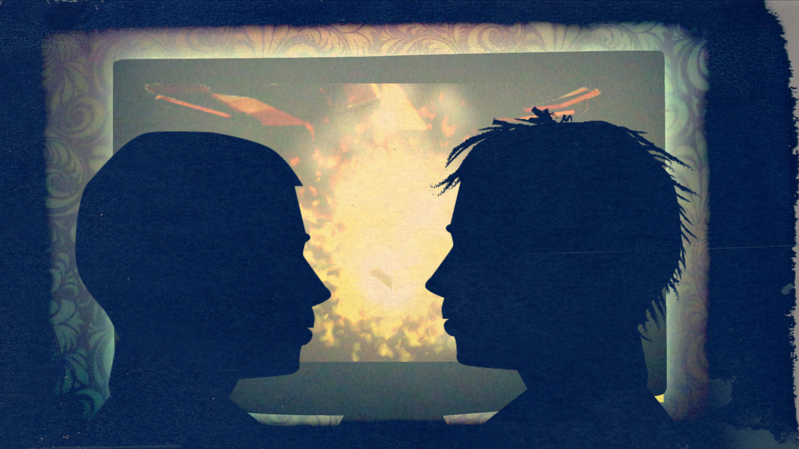

RED RIDING HOOD
The classic story with contemporary twists and all the joys of a traditional pantomime.
★★★★★
Who needs glass slippers or magic lamps when a show is as inventive as this one? … a great big glitterball of joy.
THE TIMES
★★★★★
Miller’s take on this evergreen fable is an absolute delight… Pure magic
THE STAGE
CREDITS
- first performed at the Theatre Royal Stratford East
- with music by Robert Hyman
- directed by Robert Shaw Camero

WASTED
The Brontes: They Rock
(9+ characters, originally produced with 4 actors and 4 musicians)
★★★★
This grittily exhilarating show is essential viewing if you’re interested in the future of the British musical WHATSONSTAGE
★★★★ Inspired. It’s delightful to see the formal boundaries of the genre given such a joyously energetic workout and heralds rich creative times to come EVENING STANDARD
★★★★ fantastically witty, mischievous and camp musical THE GUARDIAN
CREDITS
music by Christopher Ash
directed by Adam Lenson
first performed at Southwark Playhouse
READ EXTRACT HERE
A LITTLE PRINCESS
This beloved children's story gets an entirely new treatment, combining elements of classical Indian music and dance.
CREDITS
from the work of Frances Hodgson Burnett
music by Marc Folan
lyrics by Marc Folan and Carl Miller
additional lyrics by Adey Grummet
directed by Emily Gray
first performed by National Youth Music Theatre at The Other Palace
READ EXTRACT HERE
ADMISSIONS
A persistently funny, acutely moving exploration of twenty-first century family life.
CREDITS
reading directed by Colin Blumenau
READ EXTRACT HERE
LUCKY PETRA
A musical for actors and brass players set here and now, but with the shape-shifting, archetypal feel of folk tales.
CREDITS
music by Christopher Ash,
directed by Tony Graham
(workshop presentation, NYU New Plays for Young Audiences, Provincetown Playhouse New York)
READ EXTRACT HERE
BAREBACK
A woman visiting an Eastern European city faces the ethical issues raised by her brother's gay porn business
CREDITS
READ EXTRACT HERE
STRANGE CASE OF DOCTOR JEKYLL AND MISTER HYDE
Experimental forty-five minute version of Stevenson's classic horror mystery, originally performed with masks and a specially composed soundscape.
CREDITS
from the book by Robert Louis Stevenson
directed by Emily Gray
specially composed soundscape by Christopher Ash.
(Trestle)
READ EXTRACT HERE
BUTCHER
The Irresistible Fall and Inimitable Rise of Fred Barnes, Birmingham's Gay Music Hall Star.
CREDITS
reading directed by Tony Graham
READ EXTRACT HERE
OSTRICH BOYS
Three teenage boys steal the ashes of their friend in a fast-paced, funny and moving road-movie of a play.
★★★★★
superbly and funnily adapted by Carl Miller … everything one could wish for: a scintillating show, mostly comic but also tinged with guilt and tension … it’s impossible to fault this show. Worth six stars - I couldn’t recommend it too highly
COVENTRY TELEGRAPH
CREDITS
from the book by Keith Gray
directed by Tony Graham
(Belgrade Theatre Coventry, National Theatre Company of Korea,
large cast youth theatre version directed by Hannah Phillips, Birmingham Rep, published by Methuen)
READ EXTRACT HERE
small cast version
large cast version
THE H WORD
lyrics
CREDITS
music by Christopher Ash,
book and direction by Carol Russell
(One Spirit Productions, showcased at BEAM Park Theatre London)
READ EXTRACT HERE
I AM
Based on detailed original research into Gay British Asian life stories today; a funny, fierce kaleidoscopic theatre experience packed with brave testimony and untold stories.
CREDITS
from interviews exploring gay British Asian life stories (conceived and produced by Bobby Tiwana / Tiger Strut, directed by Kate Chapman, workshop performances at Sheffield Theatres and across England)
READ EXTRACT HERE
also link to short animated films I wrote based on this research, produced by Bobby Tiwana and directed by Kate Jessop
LITTLE ELEPHANT
CHARIOT RIDERS
PRECIPITATION
CREDITS
music by Helen Chadwick
directed by Bill Bankes-Jones
(Tête-à-Tête)
READ EXTRACT HERE
IN THE ABSENCE OF MEN
Paris, Summer 1916; a woman's life is devastated by an erotic love triangle between 16 year old Vincent, a famous novelist, and her soldier son.
CREDITS
From the novel by Philippe Besson.
READ EXTRACT HERE
MEASURE FOR MEASURE
(adaptation)
CREDITS
directed by Rosamunde Hutt (RADA)
READ EXTRACT HERE
EMIL AND THE DETECTIVES
Classic children's adventure in 1920s Berlin.
the dialogue is snappy and funny; full of pace and wisecracks. It's a brilliant adaptation by Carl Miller
HUFFINGTON POST
★★★★
Exhilarating … Carl Miller has a long and honourable record as a writer and adapter of plays for young people … without ever condescending or watering down
FINANCIAL TIMES
★★★★
a thrill … In Carl Miller’s savvy version this 1929 adventure story feels like a precursor of Harry Potter and is conceived on a remarkably grand scale
EVENING STANDARD
★★★★
an ambitious and entertaining adaptation… as rousing and inventive as any show around
THE TIMES
★★★★
not a child or an adult didn’t sit through it entranced or emerge delighted
THE ARTS DESK
CREDITS
from the book by Erich Kästner
directed by Bijan Sheibani
(National Theatre)
READ EXTRACT HERE
a shorted schools version is also available
and an even shorter one!
WHITE SUIT
A song-theatre show composed by Helen Chadwick for outdoor festivals with larger than life physicality that tells the true life story of a landmine survivor.
CREDITS
music by Helen Chadwick
directed by Helen Chadwick and Mia Theil Have
Greenwich and Docklands International Festival
READ EXTRACT HERE
NIGHT DANCE
(short opera)
CREDITS
music by Michael Taplin
directed by Stuart Barker
Guildhall School of Music and Drama
READ EXTRACT HERE
THE THREE MUSKETEERS
Alexandre Dumas' epic classic reimagined for six performers and family audiences.
CREDITS
from books by Alexandre Dumas
directed by Rosamunde Hutt
(Unicorn)
READ EXTRACT HERE
THE BIRTHDAY OF THE INFANTA
Bravura solo show from the story by Oscar Wilde
Clever, compelling, moving, strange.
THE TIMES
CREDITS
from the story by Oscar Wilde
directed by Emily Gray
(Trestle)
READ EXTRACT HERE
THE TEMPEST
(adaptation)
CREDITS
directed by Tony Graham (Unicorn)
READ EXTRACT HERE
THE LONDON EYE MYSTERY
A contemporary tale of young detectives
CREDITS
from the book by Siobhan Dowd
directed by Rosamunde Hutt
(Unicorn)
READ EXTRACT HERE
RED FORTRESS
Romantic historical adventure as a trio of Christian, Jewish and Muslim children comes of age in a changing Europe five hundred years ago.
CREDITS
directed by Tony Graham (Unicorn)
READ EXTRACT HERE
RETURN
A gritty and disturbing modern day mystery of friendship and revenge.
CREDITS
directed by James Williams
(Watford Palace Theatre and Hertfordshire County Youth Theatre)
READ EXTRACT HERE
BLACK-EYED SUSAN
New version of Douglas Jerrold's nineteenth century classic nautical melodrama.
CREDITS
version of the play by Douglas Jerrold
directed by Colin Blumenau
(Theatre Royal Bury St Edmunds)
READ EXTRACT HERE
also versions of
Wives as they Were and Maids as they Are and
Every One Has His Fault
both by Elizabeth Inchbald
THE HOUND OF THE BASKERVILLES
Inventive and entertaining adaptation for young performers of Conan Doyle's classic tale of mystery and suspense.
CREDITS
from the book by Arthur Conan Doyle (published by Collins Drama)
READ EXTRACT HERE
THE COMING OF THE KING
A royal family in crisis; London on terrorist alert; waves of sexual and political scandal: the (partly) true behind the scenes story of Edward the Seventh's 1902 coronation.
CREDITS
directed by Jonathan Dawes (City Lit)
READ EXTRACT HERE
THE SAME LANGUAGE
A solo performance for one man, the BBC Light Programme and an iPod. Spanning fifty years, two continents and unspeakable vice. Based on Ben Duncan's autobiography.
CREDITS
from the book by Ben Duncan,
directed by Colin Blumenau
(Hotbed Festival Cambridge)
READ EXTRACT HERE
JOURNEY TO THE RIVER SEA
Orphan Maia, adrift on the Amazon, forges new friendships amid life-changing adventures. From the novel by Eva Ibbotson
CREDITS
from the book by Eva Ibbotson, directed by Rosamunde Hutt (Theatre Centre and Unicorn)
READ EXTRACT HERE
SPELLSHOCK
Combines the bravura of grand opera with the delicacy of contemporary puppetry
CREDITS
music by Maurice Ravel
directed by Tony Graham
(New Visions New Voices, Kennedy Center, Washington DC)
READ EXTRACT HERE
DEATH TAKES A BOW: SHERLOCK HOLMES AND THE ATHENAEUM GHOUL
When death takes the stage at a drama trading on the great detective's fame, Sherlock Holmes reluctantly emerges from retirement.
CREDITS
directed by Colin Blumenau (Theatre Royal Bury St Edmunds)
READ EXTRACT HERE
HANSEL AND GRETEL
The traditional story reworked with a yummy contemporary bite
CREDITS
directed by Colin Blumenau
first performed at the Theatre Royal Bury St Edmunds
READ EXTRACT HERE
JANET AND JANE
The gods are angry and the only thing that will calm them down is the sacrifice of a local virgin. So Janet and Jane disguise themselves as boys, hide in the forest - and fall in love…
CREDITS
directed by Sue Rosser
first performed by Theatre Royal Bury St Edmunds Youth Theatre at the Theatre Royal Bury St Edmunds
READ EXTRACT HERE
DESCENT
Genetic research uncovers uncomfortable secrets in an island drama.
CREDITS
directed by Pip Minnithorpe
(Birmingham Rep)
READ EXTRACT HERE
THE DUCHESS OF MALFI
(textual adviser)
CREDITS
by John Webster
directed by Phyllida Lloyd (National Theatre)
THE LAST ENEMY
A poetic theatrical exploration of six interwoven lives experiencing the early days of gay liberation and then the AIDS crisis.
coruscating wit ... Miller shows his ability, creating characters who are - against the odds - funny, pathetic and touching
FINANCIAL TIMES
Miller has performed the greatest favour to gay theatre
GAY TIMES
this intriguing and cleverly written play ... good theatre that could become great theatre
WHAT'S ON
CREDITS
directed by David Benedict (Gay Sweatshop)
READ EXTRACT HERE
MASTER BETTY
Highly theatrical exploration of the life and times of William Betty, teenage phenomenon of the 19th century stage.
his theatre says, very loudly, we can stage anything in this little room: we can stage the imagination
THE GUARDIAN
Carl Miller's witty, artful play ... the dialogue crackles with one liners
THE INDEPENDENT
mannered, fluent, allusive and witty ... a most enjoyable play
EVENING STANDARD
CREDITS
directed by Carl Miller (Man in the Moon)
READ EXTRACT HERE
PRINCESS
One-woman show written for Sarah Lonton. The Scotsman said it ‘sketches with neat and skilful strokes the growing up of a modern schoolgirl'.
a debut which demands to be seen
WHAT'S ON
wickedly funny ... a splendid vehicle for Miller's prodigious wit
TIME OUT
CREDITS
Performed by Sarah Lonton
directed by Elaine Kidd
performed at the Man in the Moon
READ EXTRACT HERE
YARICO
Inspired by the true story of a young woman enslaved in Eighteenth Century Barbados.
CREDITS
Music by James McConnel
Directed by Emily Gray
READ EXTRACT HERE
ENGLAND ARISE
CREDITS
Reading in the Gay Sweatshop Times Ten Festival at The Drill Hall
READ EXTRACT HERE
THE PASSION OF ALBERT NOBBS
Dublin 1860: Albert Nobbs has a simple dream, of a happy family life married to Helen Dawes - but no-one knows that Albert was born female…
CREDITS
From stories by George Moore
Music by Christopher Ash
READ EXTRACT HERE
NOTRE DAME
The classic romantic love story retold with contemporary resonance
CREDITS
from the novel by Victor Hugo
READ EXTRACT HERE
FRANKENSTEIN
Epic adaptation of Mary Shelley's iconic story, placing the primal struggle between creator and created in a provocative contemporary setting. (19+ characters, originally produced with 16 actors
CREDITS
- from the book by Mary Shelley
- directed by Emily Gray
- first performed by the National Youth Theatre Rep Company at Southwark Playhouse published by Oberon